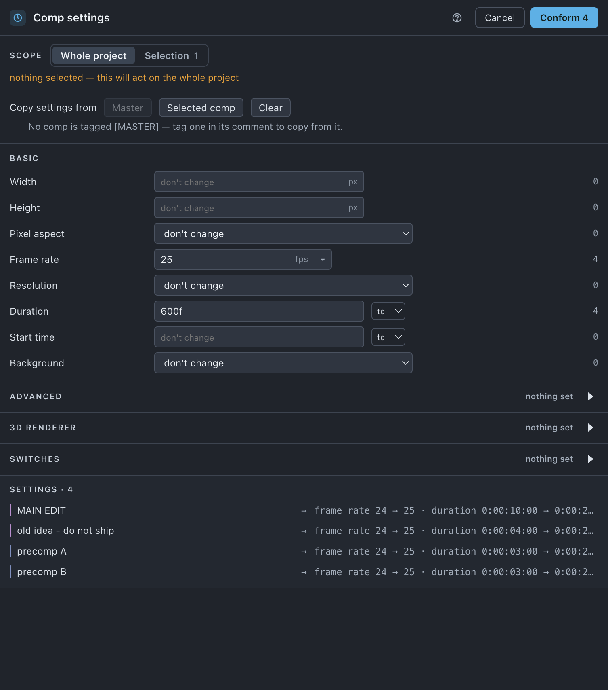

Comp settings
Sets any of nineteen composition settings across many comps at once — and, before you commit anything, tells you how many comps do not already match.
Use it when
- A delivery has to go out at one frame rate and the project was built at two.
- A precomp tree drifted off the master's settings and you want it back in line.
- You need motion blur off everywhere for a preview render, and on again after.
- A client changed the spec and nineteen comps need the same edit.
- You suspect the project is inconsistent and want to find out without changing anything.
What it does
Asks two questions in order — which comps, then which values — and writes only the fields you filled in. Every dropdown leads with don't change, every switch is a three-state leave / on / off, and an empty typed field means leave it alone, so a comp is only touched where you said something. Copy settings from fills the fields for you from a master or from one selected comp; the plan is always derived from the fields, never from the source, so you can see and edit what it filled in.
What it does not do: it does not move the contents of a comp. Width and Height here change the frame and leave the layers where they were — Resize is the tool that keeps the render identical. It also never copies Duration or Start time from a source comp.
Do it
- Select comps in the Project panel, or select nothing for the whole project.
- Press Comp settings. At Selection scope, decide Also change nested precomps — it wears the number of comps it adds.
- Optionally press Copy settings from › Master or Selected comp to fill the fields, then edit what it filled.
- Set the fields you want. Each carries a badge saying how many comps that field alone would change.
- Read the preview — it shows both values,
fps 24 → 25 · 1280×720 → 1920×1080. - Press Conform n.
Scope. Whole project or Selection (n). Also change nested precomps appears only at Selection scope, because at whole-project scope every comp is already in. Protected comps are excluded from the target list entirely.

What you'll see
| Option | What it means |
|---|---|
| Also change nested precomps | Selection scope only. Expands what gets changed, by the count on its label. |
| Copy settings from | Master — a button with the master's name, or a dropdown and Copy when there are several. Selected comp — needs exactly one comp selected. Clear empties every field. |
| Basic | Width (px) · Height (px) · Pixel aspect · Frame rate · Resolution · Duration · Start time · Background |
| Advanced | Preserve nested rate · Preserve nested resolution · Shutter angle · Shutter phase · Samples per frame · Adaptive sample limit |
| 3D renderer | Renderer — only renderers every comp in scope can actually use. |
| Switches | Motion blur · Frame blending · Draft 3D · Hide shy layers, each leave / on / off. |
Dropdowns list the values your project already uses, most-used first with a count (Half · 27), then the standards it does not have yet. Duration and Start time carry a unit picker — tc / fr / sec — remembered per field; switching the unit converts the value when the frame rate is knowable and clears it when it is not.
Notes and refusals you may see:
- After Effects accepts 1 to 30000 — the run would leave this field alone — the tooltip on a red box. Width and Height accept 1–30000, shutter angle 0–720, shutter phase −360 to 360, samples per frame 2–64, adaptive sample limit 64–256.
- Not a readable time — the run would leave this field alone
- n comps cannot use the Classic 3D renderer — their other settings still change.
- No comp is tagged [MASTER] — tag one in its comment to copy from it.
- Select exactly one comp to copy from — n are selected. / Select one comp in After Effects to copy its settings.
Undo
One ⌘Z. Nothing on disk changes.
Watch out
Things you might not think to do
- Use it as an audit and change nothing. Type a target frame rate and read the badge: it says how many comps do not already match. Press Cancel and you have your answer.
- Make every precomp match the master. Select the master, tick Also change nested precomps, Copy settings from › Master, then Conform. Duration and start timecode stay yours.
- See the split before you pick. The dropdown shows
24 · 31,25 · 4— the majority is not automatically what you want. - Turn motion blur off everywhere for a preview and on again after — that is what the three-state switch is for.
Pairs with
Resize when the frame has to change and the render must stay identical. Set up each project to make Copy settings from › Master available.